Fundamentos de arquitectura
Estructura/estilos de una arquitectura
GEOTEC, Universitat Jaume I
Sep 14, 2026
¿Estructura o Estilo de una Arquitectura Software?
Recuerda: Dimensiones arquitectura
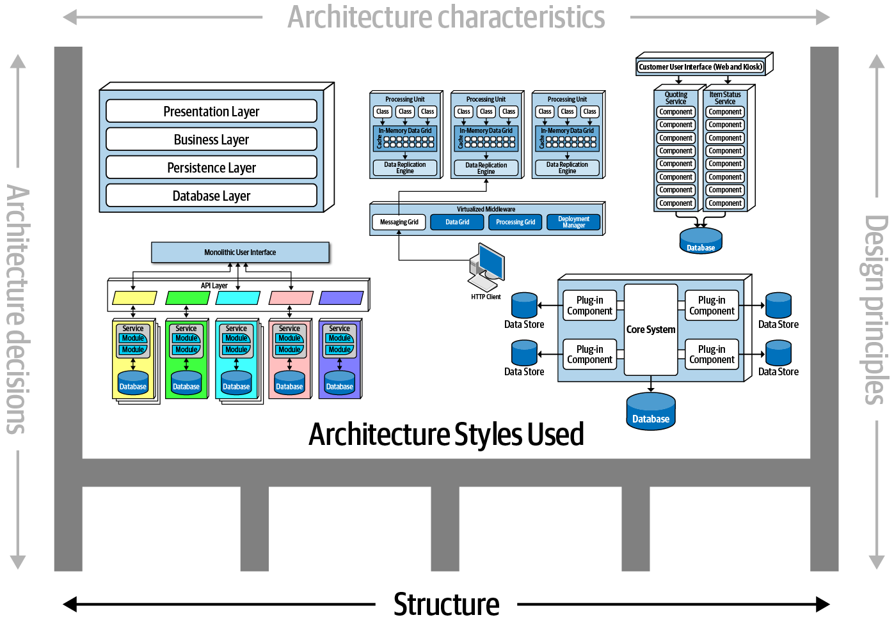
Definición
como se estructura u organiza todo el backend e interfaces de usuario de un sistema
Libro de referencia

Tipos de Estilos de Arquitectura
Monolíticos vs Distribuidos
Monolíticos
- Por capas
- Pipeline
- Microkernel
Distribuidos
- Event-driven
- Service-oriented
- Microservicios
Monolíticos - Capas
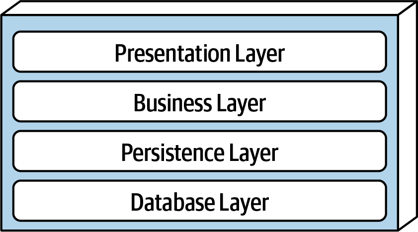
- Separation of concerns: Componentes en una capa solo saben de la lógica de esa capa.
- Layers of isolation: Modificaciones en una capa no afectan a otras.
- Partición por criterios tecnológicos: Capa agrupa componentes por función técnica (presentacion, etc) en vez de por dominio (e.g., clientes).
Monolíticos - Capas (II)
Layered architectures are consequence of applying separation of concerns to application structure (Nogueira 2022)
- Model View Controller (MVC)
- Model View Presenter (MVP)
- Hexagonal Architecture
- Onion Architecture
- Clean Architecture
Monolíticos - Pipeline
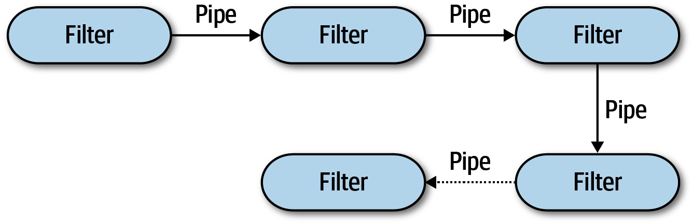
Pipes & filters transforman documentos/datos/mensajes de forma concatenada.
Monolíticos - Pipeline (II)
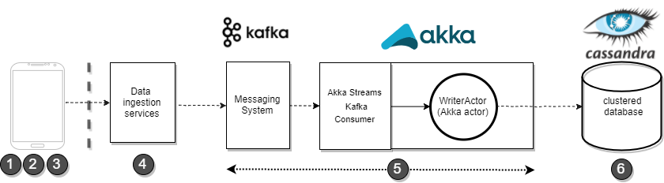
Con respecto a la gestión de datos de entrada en streaming, el primer componente en el paso 5 es un sistema de mensajería basado en Apache Kafka, que asegura la recepción, buffer y ruteo del flujo de datos en streaming. (Rodríguez Pupo 2021)
- herramientas ETL (extract, transform, and load)
- cadenas de productor-consumidor de datos
- datos en streaming (telemetría, sensores, etc)
Monolíticos - Microkernel
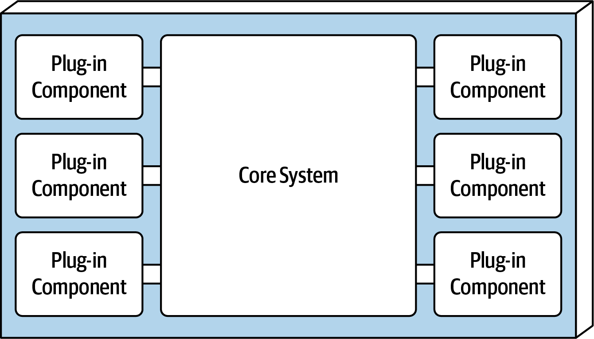
Core system es extensible
Plug-ins independientes, encapsulados y autónomos (standalone), que se comunican con el sistema via interfaces (REST, pipe, …)
Ejemplos: VSCode extensions, Jira plugins, Chrome extensions, Firefox add-ons, Alexa skills, etc.
Monolíticos - Microkernel (II)
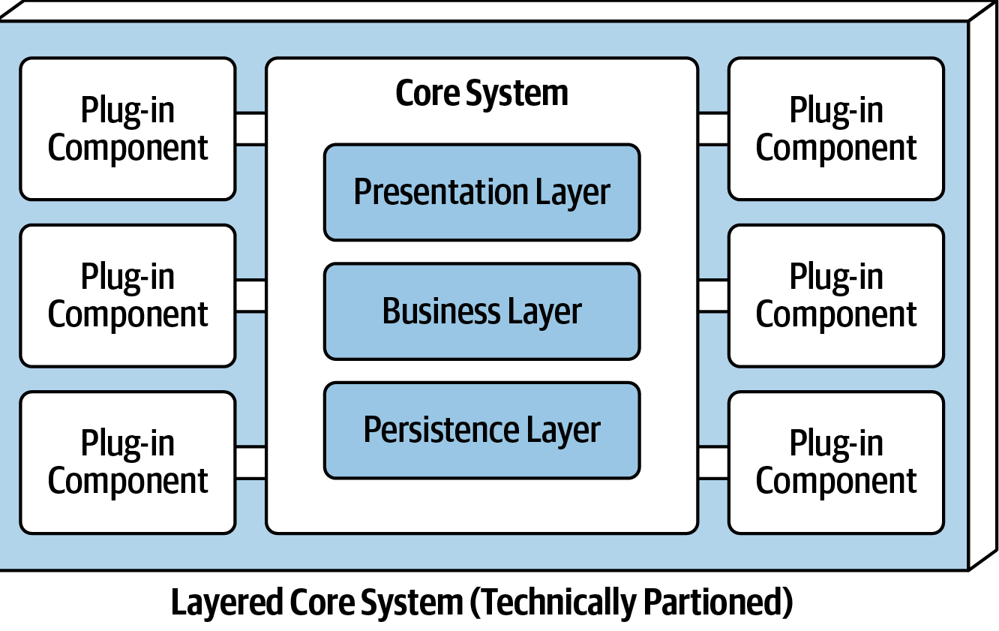
Combinación de estilos: Core System se organiza como layered architectura
Distribuidos - Event-driven
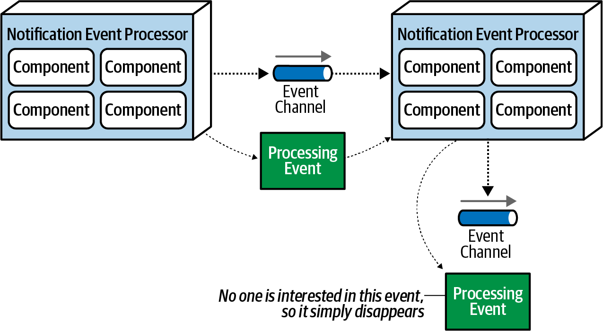
Evento: tipo de mensaje que describe lo que está occuriendo en el sistema
Productor emite un evento. Consumidor se suscribe a eventos
EDA promueve comunicacion asíncronoa de mensajes (cola eventos) en vez de request/response
EDA como microservicios basados en eventos asíncronos
Distribuidos - Event-driven (II)
Broker topology
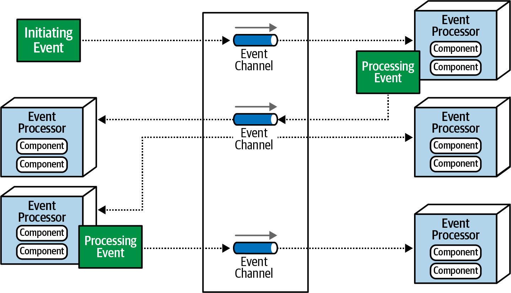
Distribuidos - Event-driven (III)
Mediator topology
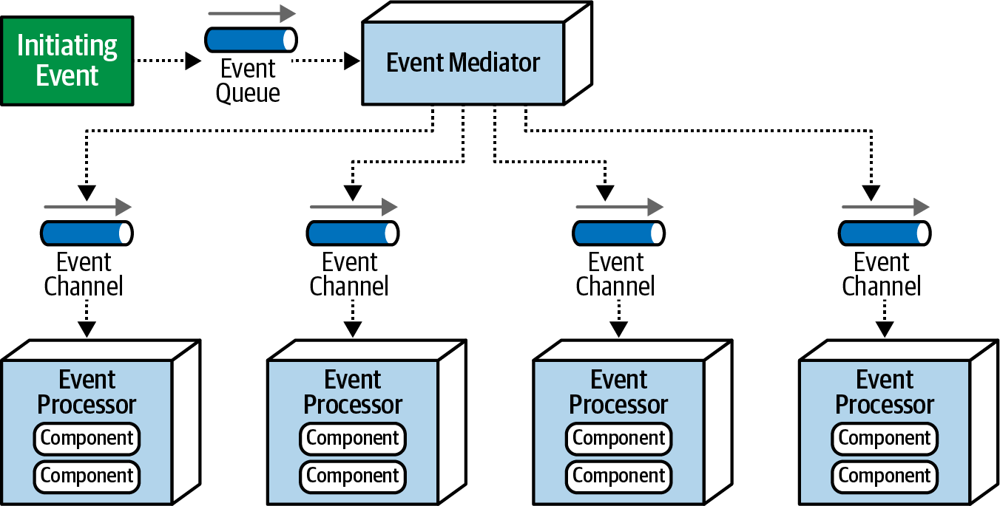
Distribuidos - Event-driven (ejemplos)
NativeScript Task Dispatcher, desarrollado por Alberto González y Miguel Matey (González-Pérez and Matey-Sanz 2021), (González-Pérez et al. 2022)
Grafo de tareas cuyas dependencias se gestionan mediante eventos (smartphone) - Ejemplo
Distribuidos - Service-oriented
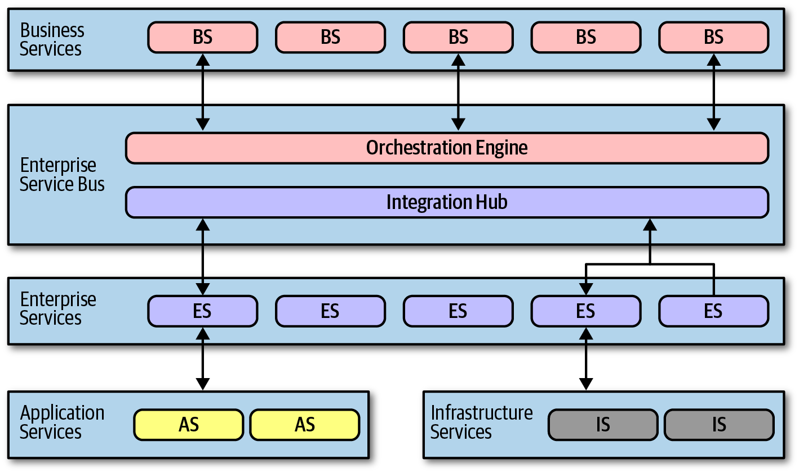
Distribuidos - Microservicios
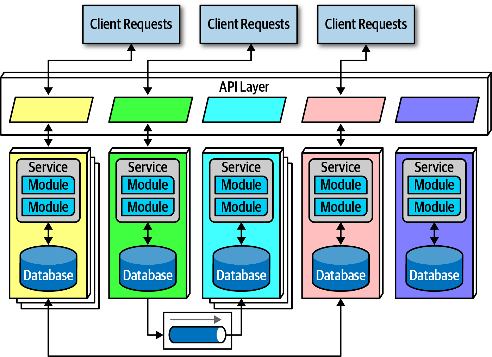
Domain-driven design (vs partición técnica)
Bounded context: cada microservicio modela un dominio o workflow
Data isolation: cada microservicio tiene su base de datos y esquema de datos
Despligue con virtualización/contenerización
Distribuidos - Microservicios (ejemplo)
Microservicios en Akka para computación de métricas basadas en mensajes (Rodríguez Pupo 2021)
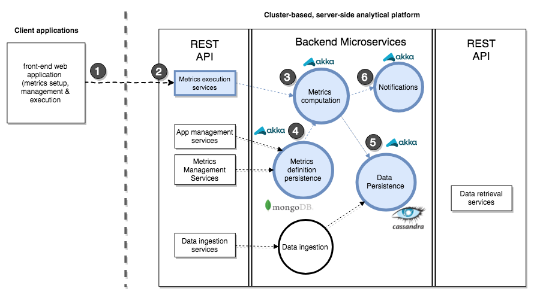